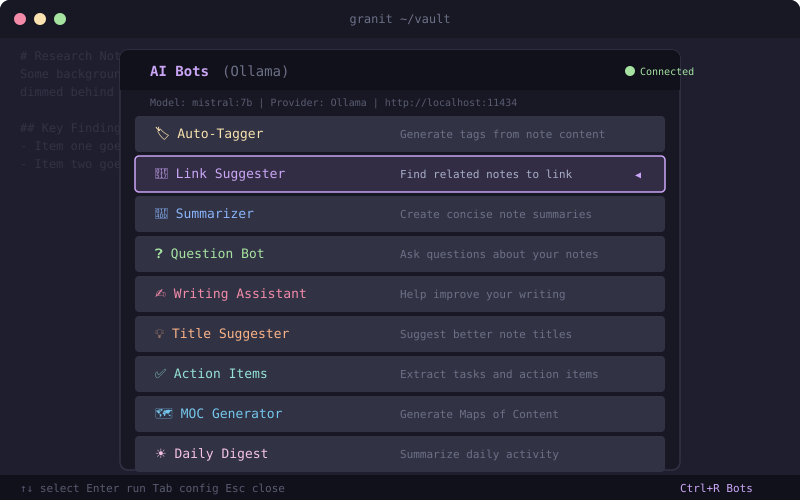
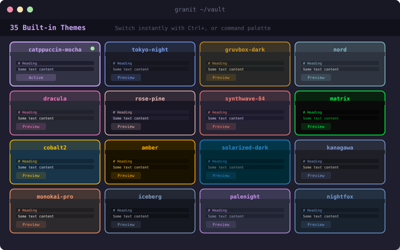

// Feature Showcase
A deeper look at what sets Granit apart.

# Editor in Action
A fast, syntax-highlighted Markdown editor with multi-cursor support, wikilink autocomplete, and heading folding -- all in your terminal.
- Syntax-highlighted code blocks (Go, Python, JS, Rust, Shell)
- Multi-cursor editing with Ctrl+D and column cursors
- Ghost Writer: inline AI writing suggestions (Tab to accept)
- 18 built-in snippets for dates, todos, tables, and more
- Rendered view mode with Mermaid diagrams and callouts

# Task Manager & Kanban
Manage your tasks, projects, and priorities without leaving the terminal. A full Kanban board built right into your knowledge base.
- 6 views: Today, Upcoming, All, Done, Calendar, Kanban
- 5 priority levels with color-coded indicators
- Daily planner with time-blocked schedule view
- AI smart scheduler that auto-assigns tasks to time slots
- Parse tasks directly from your Markdown notes

# AI-Powered Features
9 specialized AI bots that understand your notes and help you think, write, and organize more effectively.
- Auto-Tagger: intelligent tag suggestions from note content
- Link Suggester: discovers connections between your notes
- Summarizer, Question Bot, and Writing Assistant
- Works with Ollama (local), OpenAI, or a built-in offline fallback
- Deep Dive Research agent via Claude Code integration

# 35 Themes
From Catppuccin Mocha to Synthwave 84, find a color palette that matches your aesthetic and environment.
- 29 dark themes and 6 light themes included
- Catppuccin, Tokyo Night, Gruvbox, Nord, Dracula, and more
- Custom theme editor: create your own color palette
- Hot-swap themes instantly from the settings overlay
- Every UI element respects the active theme